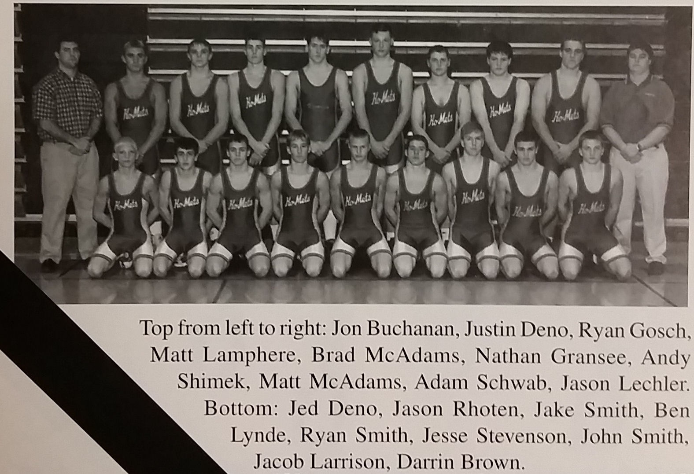

Season
1998-99
7-7Dual record
33Wrestlers
Jon BuchananHead coach

Roster
| Wt | Wrestler | Grade | Record | State |
|---|---|---|---|---|
| Dec. | 1st Farmington | W | 60-12 | |
| Dec. | 1st Zumbrota-Mazeppa | W | 35-20 | |
| Dec. | 8th Triton | L | 39-20 | |
| Dec. | 11th Cannon Falls | W | 39-25 | |
| Dec. | 18th Chatfield | L | 48-15 | |
| Jan. | 8th Hayfield | W | 40-20 | |
| Jan. | 14th Lake City | L | 35-29 | |
| Jan. | 22nd Stewartville | L | 34-30 | |
| Jan. | 23rd Plainview-Elgin-Millville | T | 28-27 | |
| Jan. | 23rd Farmington | L | 41-19 | |
| Jan. | 23rd Triton | T | 36-36 | |
| Jan. | 28th Byron | L | 28-24 | |
| Feb. | 2nd Kenyon-Wanamingo | W | 30-23 | |
| Feb. | 2nd GMLOK | W | 51-15 | |
| Feb. | 5th Pine Island | W | 37-27 | |
| Feb. | 13th Farmington | L | 29-27 | |
| 103# | Brian Carrels | 8th | 7-7 | |
| 112# | Jason Rhoten | 9th | 27-7 | |
| 119# | Jake Smith | 12th | 29-3 | |
| 125# | Ben Lynde | 11th | 13-15 | |
| 130# | Jesse Stevenson | 11th | 18-9 | |
| 135# | John Smith | 11th | 12-20 | |
| 140# | Jay Attleson | 10th | 7-13 | |
| 145# | Jake Larrison | 10th | 2-19 | |
| 152# | Justin Deno | 12th | 8-3 | |
| 160# | Brad McAdams | 11th | 23-13 | |
| 171# | Ryan Gosch | 11th | 10-21 | |
| 189# | Nathan Gransee | 11th | 1-5 | |
| 285# | Adam Schwab | 10th | 11-18 | |
| 130# | Jake Andrist | 10th | 1-4 | |
| 145# | Jacob Larrison | 10th | 2-10 | |
| 189# | Matt McAdams | 10th | 4-16 | |
| 103# | Pat Thompson | 10th | 0-4 |
Team Results
7-7 · Click to expand
- Dec. 1stFarmingtonW60-12
- Dec. 1stZumbrota-MazeppaW35-20
- Dec. 8thTritonL39-20
- Dec. 11thCannon FallsW39-25
- Dec. 18thChatfieldL48-15
- Jan. 8thHayfieldW40-20
- Jan. 14thLake CityL35-29
- Jan. 22ndStewartvilleL34-30
- Jan. 23rdFarmingtonL41-19
- Jan. 28thByronL28-24
- Feb. 2ndKenyon-WanamingoW30-23
- Feb. 2ndGMLOKW51-15
- Feb. 5thPine IslandW37-27
- Feb. 13thFarmingtonL29-27
Head coachJon Buchanan